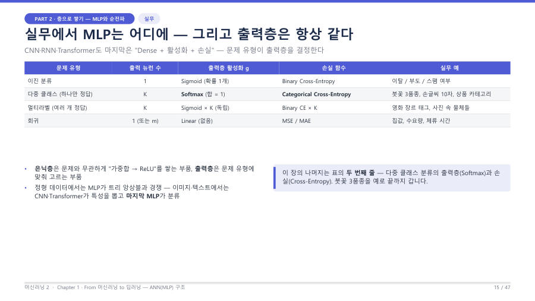

문제 유형이 출력층 세트를 정해요 ★★★
출력층에서 정할 것은 세 가지예요. 출력 뉴런 수, 출력층 활성화 함수, 손실 함수이고, 이 셋은 항상 세트로 움직여요. 교수님은 "무조건 이런 문제가 나오면 반드시 이게 나온다"는 식으로 외우라고 했어요.
| 문제 유형 | 출력 뉴런 수 | 활성화 | 손실 | 예 |
|---|---|---|---|---|
| 이진 분류 | 1 | Sigmoid (확률 1개) | Binary Cross-Entropy | 이탈, 부도, 스팸 여부, 카드 승인 |
| 다중 클래스 (정답 하나만) | K (클래스 수) | Softmax (합 = 1) | Categorical Cross-Entropy | 붓꽃 3품종, 손글씨 10자 |
| 멀티라벨 (정답 여러 개) | K | Sigmoid × K (각각 독립) | Binary CE × K | 영화 장르 태그, 사진 속 물체들 |
| 회귀 | 1 (또는 m) | Linear (없음) | MSE / MAE | 집값, 수요량, 체류 시간 |

왜 이렇게 짝지어질까요? 이유를 한 줄씩 알아 두면 외우기 쉬워요.
- 이진 — 확률 하나(p)만 있으면 나머지는 1 − p라서 뉴런 1개와 Sigmoid(0~1)면 충분해요.
- 다중 클래스 — 정답이 딱 하나라서 확률을 다 더하면 1이 되어야 해요. 그래서 합이 1이 되도록 만드는 Softmax를 써요.
- 멀티라벨 — 정답이 여러 개일 수 있어서 합이 1일 필요가 없어요. 라벨마다 "이 라벨이 있나 없나"를 따로 묻는 이진 분류 K개로 생각해요.
- 회귀 — 집값처럼 어떤 크기의 숫자도 나올 수 있어야 해서 값을 누르는 활성화를 쓰지 않아요(Linear).
이진 분류는 "O/X" 한 칸, 다중 클래스는 "보기 중 하나만 고르는 객관식", 멀티라벨은 "해당하는 것을 모두 체크", 회귀는 "숫자를 직접 적는 주관식"이에요. 답안지 양식(출력층)이 문제 종류에 따라 달라지는 거예요.
교수님이 7주차에 한 말을 정리하면 "시그모이드는 모양부터 이진 분류처럼 생겼고(양 끝이 0 또는 1), 소프트맥스는 다중 분류에 써요. 다중 분류의 손실이 Categorical Cross-Entropy예요"예요. 시그모이드로 3개 이상을 하나만 고르는 것은 안 맞아요.
Keras에서는 이렇게 문자열로 써요. 손실 이름은 정답 라벨의 모양에 따라 골라요(강의 Chapter 3의 코드 빈칸에서 철자까지 맞게 써야 해요).
| 상황 | 출력층 / 손실 문자열 |
|---|---|
| 이진 분류 (IMDB 리뷰 긍정/부정) | Dense(1, activation='sigmoid') / loss='binary_crossentropy' |
| 다중 클래스, 라벨이 정수 (0~9) | Dense(10, activation='softmax') / loss='sparse_categorical_crossentropy' |
| 다중 클래스, 라벨이 원-핫 [0,1,0] | Dense(K, activation='softmax') / loss='categorical_crossentropy' |
| 멀티라벨 | Dense(K, activation='sigmoid') / loss='binary_crossentropy' |
문제 문장에서 "정답이 몇 개인가"를 먼저 보세요. 2가지 중 하나면 Sigmoid + Binary, 여러 개 중 하나면 Softmax + Categorical, 여러 개가 동시에 정답이 될 수 있으면 Sigmoid × K, 숫자 자체를 맞히면 Linear + MSE예요. 라벨이 정수면 sparse가 붙어요.
스팸 여부를 판정하는 이진 분류는 출력 뉴런 1개에 Sigmoid, 손실은 Binary Cross-Entropy를 쓴다. 손글씨 숫자 10개 중 하나를 고르는 다중 클래스 분류는 출력 뉴런 10개에 Softmax, 손실은 Categorical Cross-Entropy(정수 라벨이면 sparse_categorical_crossentropy)를 쓴다.
잠깐 확인 — 영화 한 편에 "액션", "코미디", "로맨스" 태그가 동시에 붙을 수 있는 문제의 출력층은?
멀티라벨이라서 뉴런 K개에 Sigmoid를 각각 쓰고 손실은 Binary CE예요. 태그가 여러 개 동시에 정답일 수 있어서 합이 1인 Softmax는 맞지 않아요.
화면을 가리고 "문제 유형이 출력층 세트를 정해요 ★★★"을(를) 친구에게 설명하듯 한 문장으로 말해 보세요. 막히면 위의 빨간 칸만 다시 보고 넘어가요.
자료: 2주차 · 머신러닝2_chapter1_student_ver.pdf(PART 3·5) · 머신02.txt · 머신러닝07.txt